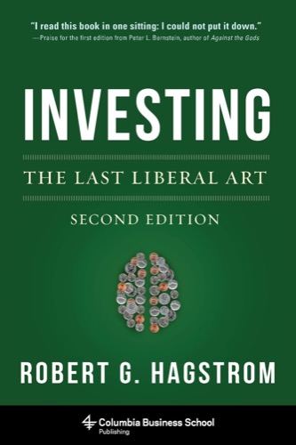

罗伯特·哈格斯特朗（Robert G. Hagstrom）在完成《沃伦·巴菲特之道》之后，花了数年时间追问一个更根本的问题：为什么同样是聪明人，有些投资者能持续超越市场，而大多数人却做不到？他的答案不是"更好的财务模型"或"更快的信息获取"，而是"更宽广的知识格栅"。《投资的格栅理论》初版于2000年，由Texere出版社发行；2013年哥伦比亚大学商学院出版社出版了经过大幅修订的第二版，中文版由机械工业出版社引进出版，书名正是"投资的格栅理论"。哈格斯特朗在书中的核心主张是：真正的投资能力来自跨学科的综合理解，而非对单一专业的精深掌握——这一判断，直接来源于查理·芒格多年来反复阐述的"多元思维模型"思想。
全书以芒格的"格栅"比喻为框架，逐章探讨物理学、生物学、社会学、心理学、哲学与文学如何为投资提供独特的认知工具。物理学章节借助牛顿力学与混沌理论，讨论市场均衡与非均衡状态的转换；生物学章节引入达尔文的自然选择与适应性进化，解释为何"最优秀"的策略并不总是市场中最能存活的；社会学章节探讨群体行为与市场泡沫之间的内在联系；心理学章节梳理丹尼尔·卡尼曼与阿莫斯·特沃斯基的行为经济学研究，揭示投资者系统性偏差的根源；哲学章节讨论实用主义传统对决策思维的影响；文学章节则从陀思妥耶夫斯基、威廉·福克纳等作家的叙事中提炼出关于不确定性与人性的洞察。哈格斯特朗的目标不是让投资者成为这些学科的专家，而是帮助他们从每个领域提炼出那几个最关键的思维模型，使其在面对投资决策时能够调动更丰富的认知资源。
查理·芒格（Charlie Munger）是本书诞生的直接精神源头。芒格在1994年南加州大学法学院的著名演讲中提出："你们必须知道各主要学科的重要模型，并把它们用于日常生活。"他随后补充："大约有80到90个重要模型，足以承载你成为一个智慧之人所需的90%的重量。"哈格斯特朗将这段论述视为本书的写作指令，并在书中多次直接引用芒格的原话，追溯其思想渊源至本杰明·富兰克林、约翰·穆勒等启蒙传统。芒格后来在公开场合称赞此书是对"格栅理论"最为系统和可读的阐发，将其推荐给希望扩展知识边界的投资者和学生。
对于投资者而言，《投资的格栅理论》的独特价值在于它挑战了一种根深蒂固的偏见：投资是一门只需懂财务报表和估值模型的技术。哈格斯特朗和芒格共同指向的方向恰恰相反——越是在信息高度透明、量化工具高度发达的时代，那些能够从物理学的相变、生物学的适应性、心理学的偏差中汲取洞察的投资者，反而越可能在市场的复杂性面前保持清醒的头脑。这本书不提供选股公式，而是提供一种关于"如何思考思考本身"的方法论——在芒格的读者群中，它被公认为最能代表芒格智识传统的入门读本之一。